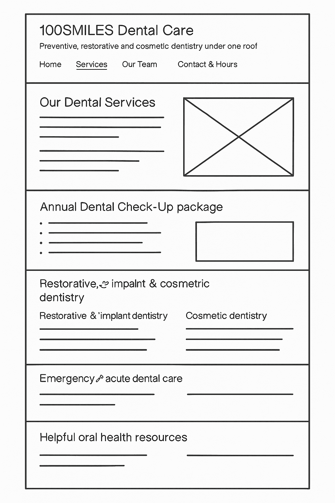
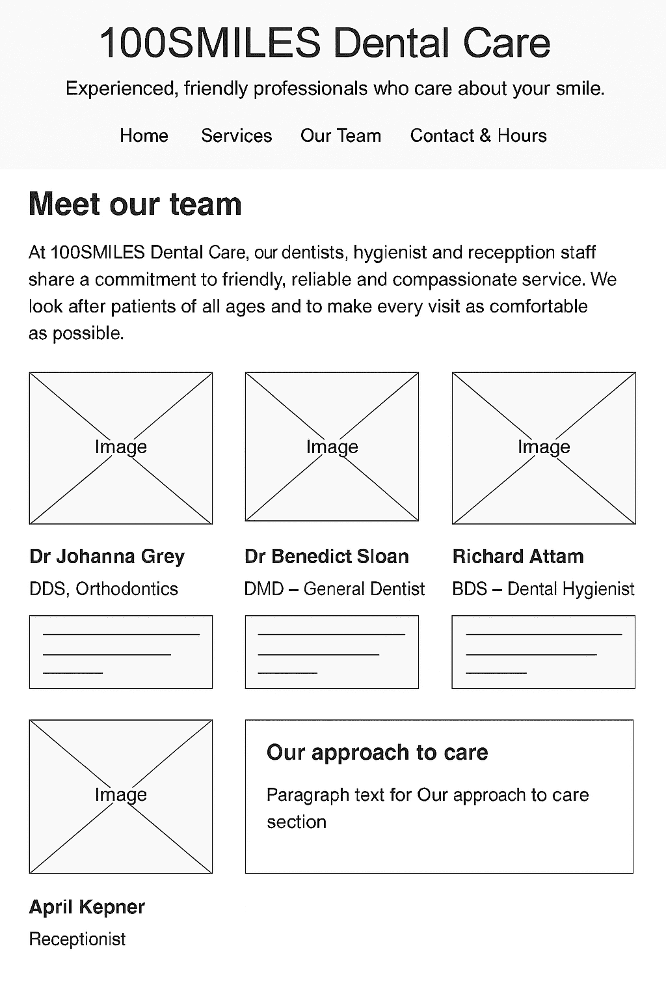
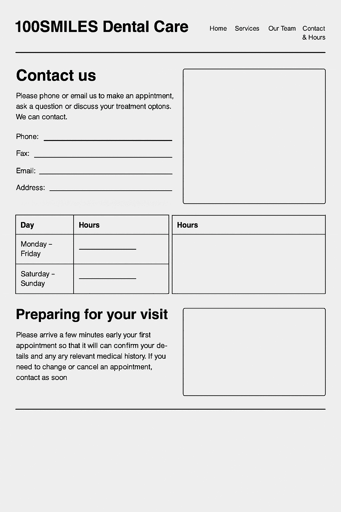
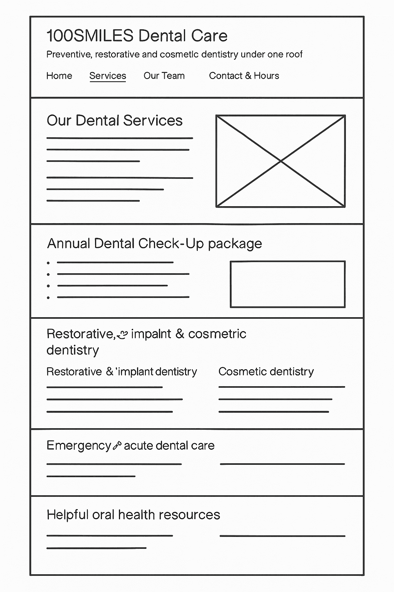
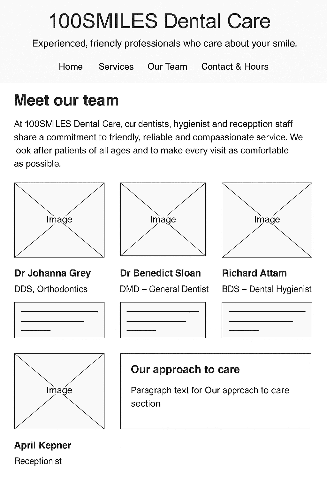
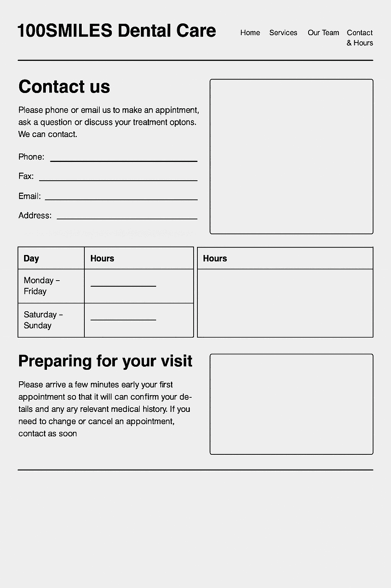
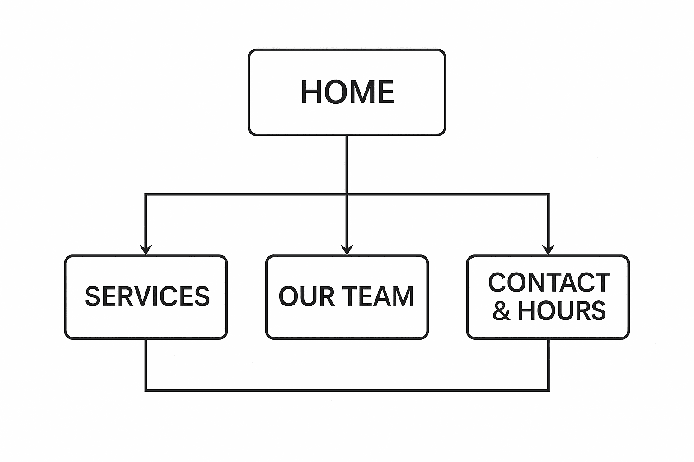
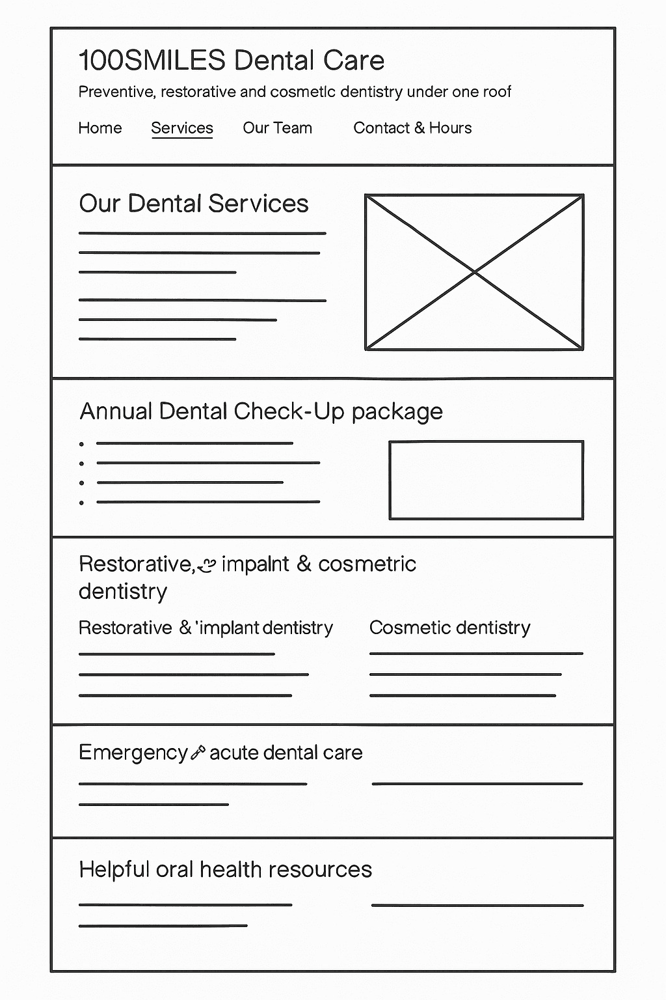
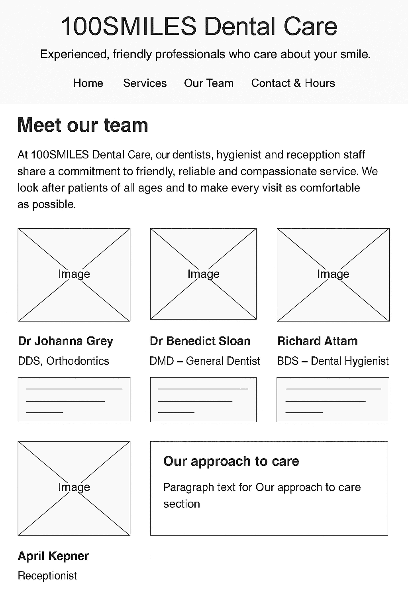
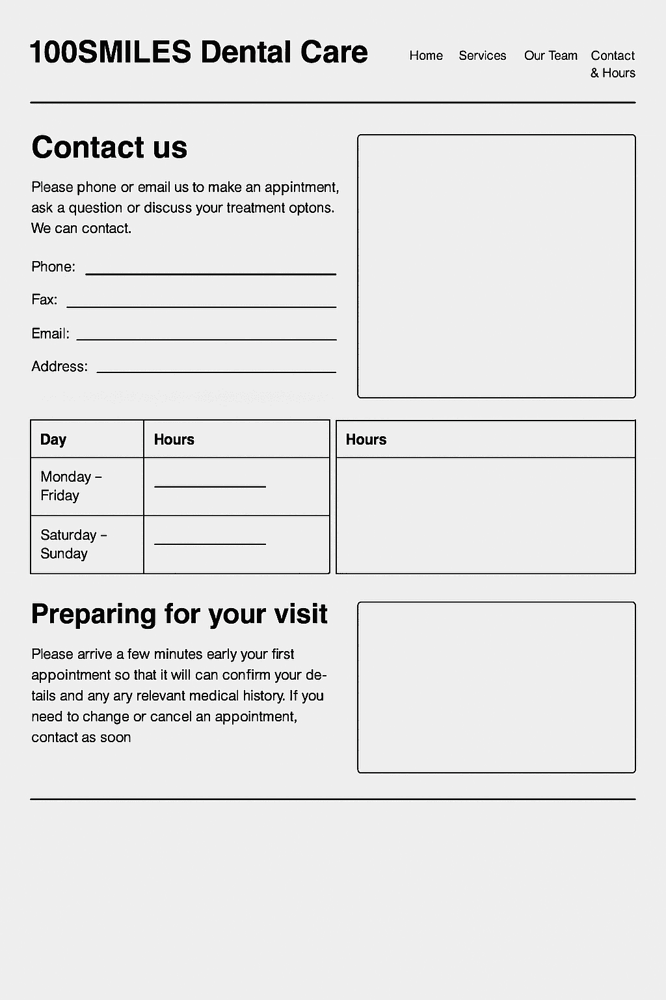

Name: Swan Htet Zaw
The goal of the 100SMILES Dental Care website is to increase the number of preventive dental appointments (check-ups, cleans and the Annual Dental Check-up package) booked by new and returning patients by at least 20% over the next six months. The site will achieve this by clearly presenting the clinic’s services, highlighting current discounts, and making it quick and easy for local families in Razole to contact the clinic by phone or email to book an appointment.
The clinic will evaluate the website’s success by tracking outcomes that are directly linked to this goal. First, staff will compare the number of preventive appointments (check-ups, cleans and Annual Dental Check-up packages) in the six months before and after the website launch. Second, reception staff will record how many patients book through the email link or mention the website when they contact the clinic. Third, a short survey at reception will ask new patients how easy it was to find information and make a booking online. If preventive appointment bookings and email enquiries increase by at least 20%, and most surveyed patients report that the site is easy to use, the website will be considered successful.
The primary target audience is local families living in or near Razole, including parents or carers aged roughly 25–60 who organise dental care for their families, as well as older adults and retirees who need regular check-ups. Many of these users are busy, may feel nervous about dental visits, and often browse on mobile phones. To suit this audience, the site will use a calm blue and white colour scheme, friendly photos showing children, adults and older patients, clear headings and short sections of text, plus a simple navigation menu that appears the same on every page. The phone number and email address will be prominent on all pages, with clear calls-to-action such as “Book your visit” to encourage contact and bookings.
The website will contain four main pages: Home (index.html), Services (services.html), Our Team (our-team.html) and Contact & Hours (contact.html). The flowchart shows the Home page at the top with links to the other three pages, and arrows between all pages to represent the consistent navigation menu. Each page is represented by a single box, and the order of the boxes matches the order of links in the navigation bar: Home, Services, Our Team, Contact & Hours.

Wireframes are used to plan the layout of each page before building the final site. For this project, a separate wireframe has been created for the Home, Services, Our Team and Contact & Hours pages. Each wireframe shows a header with logo and navigation, the main content areas, space for key images and a footer with contact details. The Home page wireframe includes a large hero image, a short introduction to the clinic and a section for special offers. The Services wireframe groups services into clear sections so visitors can quickly scan what is available. The Our Team wireframe presents staff photos with short profiles. The Contact & Hours wireframe focuses on address, trading hours and contact details, with a clear call-to-action to book an appointment.


